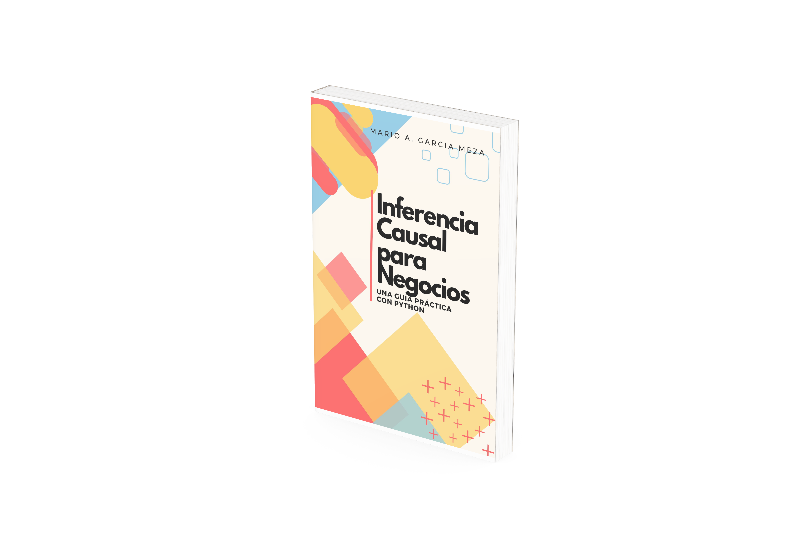

Inferencia Causal para Negocios#
Una guía práctica con python#

Sólo se aprende metiendo la pata.
¡Tanto laburo y tan poca plata!
Que hay gente que nunca va a entender por qué.
- Kilómetros, de Los Caligaris
Elaborado en el ejercicio de Año Sabático autorizado en la UJED
Los negocios son matemáticas.
Cuando salí de la universidad, tenía un solo objetivo: convertirme en empresario. Había emprendido de muchas formas durante la carrera, pero estaba listo para las grandes ligas (según yo).
El año era 2009: justo en medio de la gran recesión.
La gran recesión afectó en los ingresos de mi generación de una manera brutal (Rothstein, 2020). Quienes salimos al mundo laboral ese año nos encontramos un escenario post-apocalíptico sin opciones de trabajo y con negocios cerrando por doquier.
Y fue en los negocios que cerraban donde vi oportunidad (no hagas esto en casa).
Mi café favorito estaba en venta. Era un café en el centro histórico, con una clientela ya lista y operando al 100%. Era la oportunidad perfecta para poner en práctica todo lo que había aprendido los últimos 4 años en la universidad (según yo).
El único problema era que no tenía dinero.
Decidí juntar 10 amigos, hacerlos socios y comprar el negocio. Venía junto con una renta mensual de 11 mil pesos y un barista un poco antipático, con buenas intenciones y mucha habilidad. Hice modificaciones mínimas y abrimos al público ese mismo mes. Jamás olvidaré la sensación de abrir un negocio y comenzar a recibir clientes ese mismo día.
Para noviembre de ese mismo año, acabé con una neumonía que casi me mata y el negocio quebrado.
Cometí dos errores grandes con ese negocio#
Si no hubiera cometido estos errores, habría tenido un negocio exitoso en lugar del rotundo fracaso que viví.
El primer error fue no haberme ensuciado las manos lo suficiente. Pensaba que mis conocimientos de administración eran suficientes para manejar cualquier situación. Si volviera al pasado, habría dedicado más tiempo a aprender a hacer todo en la operación del negocio.
Mi segundo error fue seguir demasiado mi intuición y muy poco a lo que decían los datos. También fue por arrogancia. Saliendo de la universidad sentía que ya lo sabía todo y que todos los demás estaban equivocados.
Nunca más.
Usar datos en los negocios significa tener la humildad de aceptar que no lo sabemos todo#
No estaba loco, simplemente no entendí los números.
Para convencer a 10 amigos a que invirtieran conmigo usé gráficas del ciclo económico. Les expliqué que estábamos seguramente ya en el punto más bajo y que la economía no tenía más opción que subir. Los datos históricos me respaldaban, pero esta no era una recesión normal.
Si hubiera sido más cuidadoso al revisar los datos, probablemente no habría tomado un riesgo tan alocado.
Este libro está diseñado para un mundo donde la Inteligencia Artificial puede hacer análisis de datos#
La primera sección se enfoca en el mindset de la inferencia causal.
Hoy en día ya es posible subir una base de datos a chatGPT y pedirle que limpie y prepare los datos para hacer análisis. Luego le puedes pedir que haga una regresión lineal y que te de su interpretación de los resultados. Finalmente, le puedes pedir que haga las pruebas de hipótesis más comunes.
Pero aún con todo eso, la IA no puede determinar si los efectos son causales o no. Eso sólo lo vas a poder hacer tú, y en este libro aprenderás cómo.
La segunda sección tiene elementos de negocios indispensables para generar crecimiento basado en datos.
El análisis de datos hoy en día es un elemento integral de los negocios. No se trata de un accesorio adicional: los datos son tu negocio. Cada paso que damos en negocios, lo debemos hacer tomando la evidencia como un elemento central.
En la última sección veremos los modelos más avanzados. Por que al inicio estaremos intentando hacer experimentos, pero cuando no es posible hacer uno, nos aprovecharemos de los experimentos naturales.
It’s the economist way.
Como citar este libro#
Cita en APA (7a edición)
García Meza, M. A. (2024). *Inferencia causal para negocios: Una guía práctica con Python*. https://inferenciacausal.com
Cita en MLA (9a edición)
García Meza, Mario A. *Inferencia Causal para Negocios: Una Guía Práctica con Python*. Durango, México, 2024. https://inferenciacausal.com.
Cita en Chicago
García Meza, Mario A. I*nferencia Causal para Negocios: Una Guía Práctica con Python*. Durango, México, 2024. https://inferenciacausal.com.
Espero que este libro te resulte útil.#
Si eres economista y deseas escribir tu primer paper de economía, hice este curso gratis por correo justo para tí.
En este curso aprenderás a:
Crear objetivos de investigación que tienen sentido, que ningún juez te podrá “tumbar”.
Usar causalidad en tus modelos y no sólo seguir una receta de cocina para trabajar con datos.
Apoyarte de otras personas y la tecnología para escribir al menos dos papers al año, todos los años, consistentemente y para siempre.
Referencias#
Campos-Vazquez, R. M., Esquivel, G., Ghosh, P., & Medina-Cortina, E. (2023). Long-lasting effects of a depressed labor market: Evidence from Mexico after the great recession. Labour Economics, 81, 102332. https://doi.org/10.1016/j.labeco.2023.102332
Rothstein, J. (2020). The Lost Generation? Labor Market Outcomes for Post Great Recession Entrants. NBER Papers. DOI: 10.3386/w27516